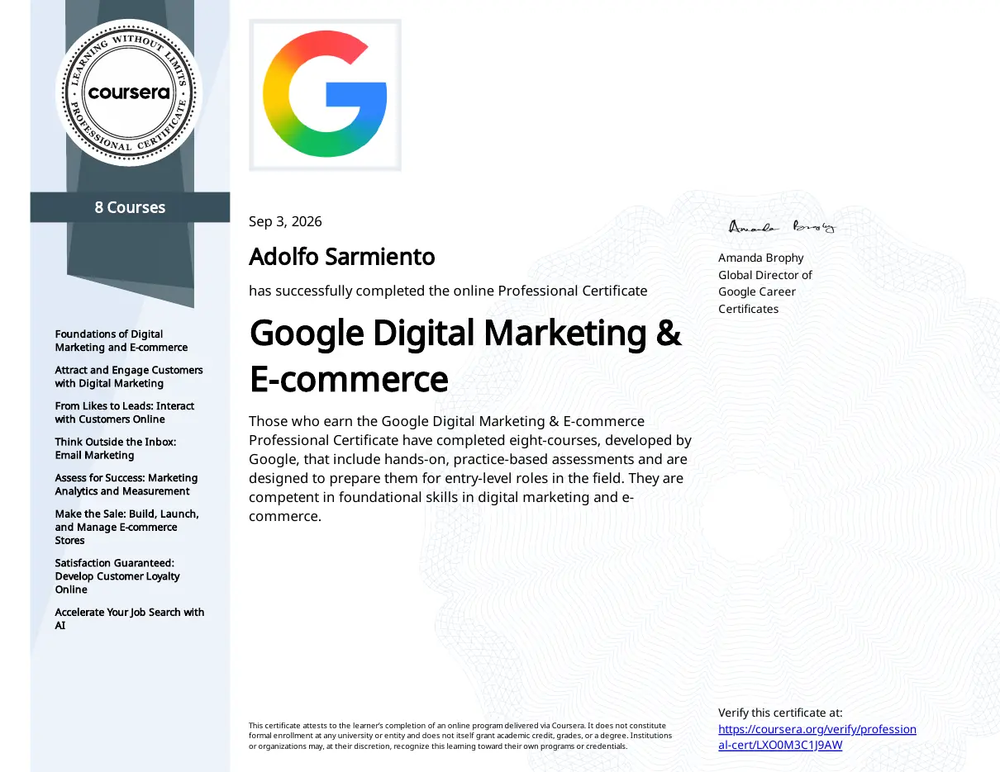
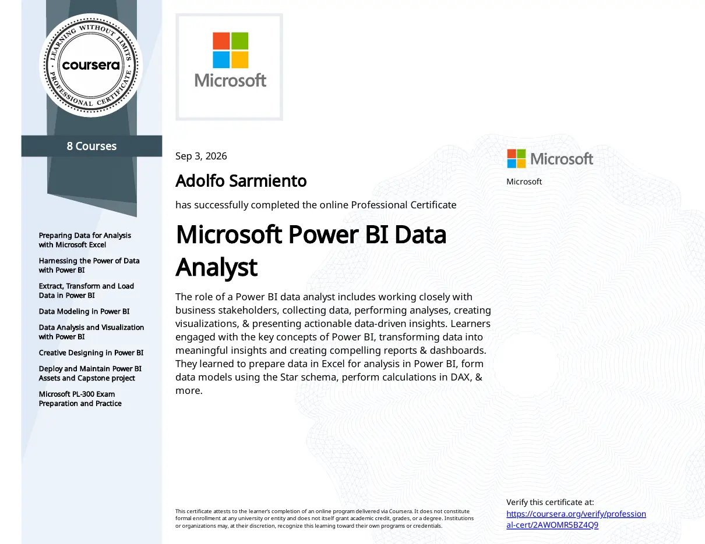
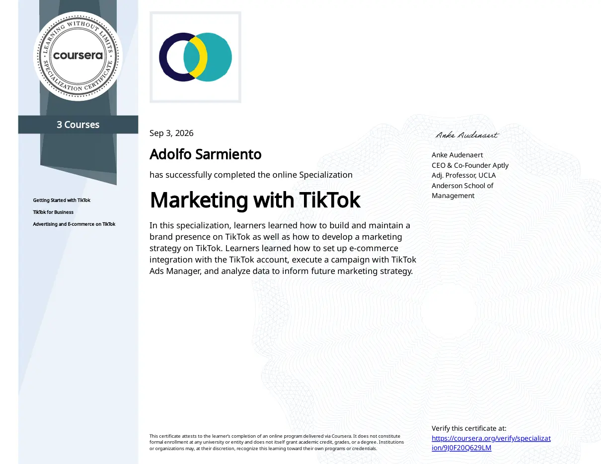
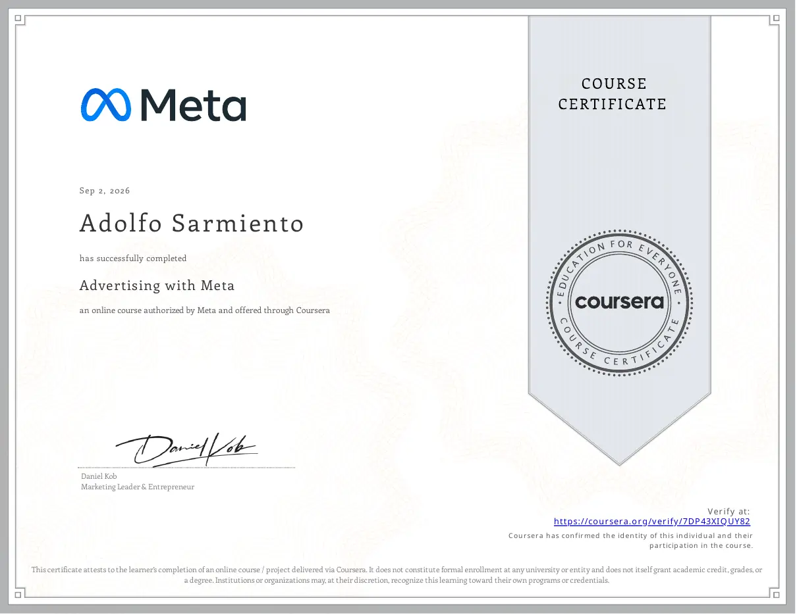
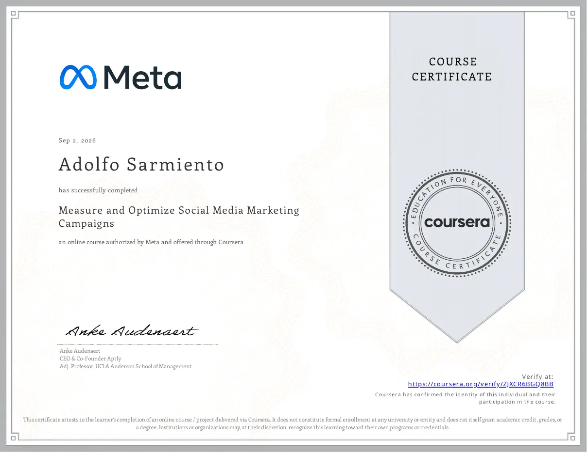

GOOGLE · COURSERA
Google Digital Marketing & E-commerce
Certificado profesional · 3 de septiembre de 2026
Verificar en CourseraPaid Media & Analytics Specialist
Soy estudiante de cuarto año de Matemática Aplicada en la Universidad del Valle de Guatemala. Combino la administración de campañas con un enfoque analítico para transformar los datos en recomendaciones comprensibles y útiles.
He administrado más de Q15,000 en anuncios digitales, trabajando con Meta Ads, Google Ads y TikTok Ads para conectar la inversión publicitaria con decisiones mejor informadas.

Aquí reúno formación en publicidad digital, analítica, Power BI y plataformas sociales para que puedas verificar las credenciales que respaldan mi trabajo.

Certificado profesional · 3 de septiembre de 2026
Verificar en Coursera
Certificado profesional · 3 de septiembre de 2026
Verificar en Coursera

Certificado de curso · 2 de septiembre de 2026
Verificar en Coursera
Certificado de curso · 2 de septiembre de 2026
Verificar en CourseraEl análisis, la comunicación y la disciplina también se construyen fuera de una plataforma publicitaria.
Puedes escribirme para conversar sobre publicidad digital, analítica o una posible colaboración.